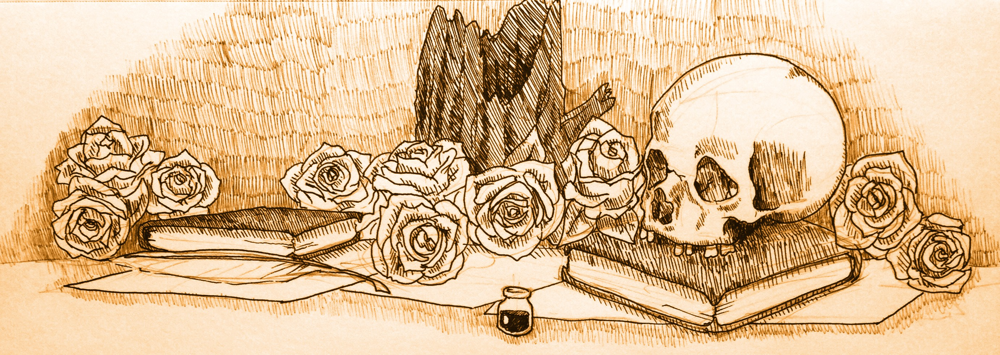

A Midsummer Night's Dream
Helena: O spite! O hell! I see you all are bent
To set against me for your merriment:
If you we re civil and knew courtesy,
You would not do me thus much injury.
Can you not hate me, as I know you do,
But you must join in souls to mock me too?
If you were men, as men you are in show,
You would not use a gentle lady so;
To vow, and swear, and superpraise my parts,
When I am sure you hate me with your hearts.
You both are rivals, and love Hermia;
And now both rivals, to mock Helena:
A trim exploit, a manly enterprise,
To conjure tears up in a poor maid's eyes
With your derision! none of noble sort
Would so offend a virgin, and extort
A poor soul's patience, all to make you sport.
As You Like It
Rosalind: Love is merely a madness, and, I tell you, deserves as well a dark house
and a whip as madmen do; and the reason why they are not so punished and
cured is, that the lunacy is so ordinary that the whippers are in love too.
Yet I profess curing it by counsel. (Orlando: Did you ever cure any so?)
Yes, one; and in this manner. He was to imagine me his love, his mistress;
and I set him every day to woo me: at which time would I, being but a
moonish youth, grieve, be effeminate, changeable, longing and liking; proud,
fantastical, apish, shallow, inconstant, full of tears, full of smiles,
for every passion something, and for no passion truly anything, as boys and
women are, for the most part, cattle of this colour; would now like him,
now loathe him; then entertain him, then forswear him; now weep for him,
then spit at him; that I drave my suitor from his mad humour of love to a
living humour of madness, which was, to forswear the full stream of the
world, and to live in a nook merely monastic. And thus I cured him; and
this way will I take upon me to wash your liver as clean as a sound sheep's
heart, that there shall not be one spot of love in't.
Measure for Measure
Isabella: O faithless coward! O dishonest wretch!
Wilt thou be made a man out of my vice?
Is't not a kind of incest, to take life
From thine own sister's shame? What should I think?
Heaven shield my mother play'd my father fair!
For such a warped slip of wilderness
Ne'er issued from his blood. Take my defiance!
Die, perish! Might but my bending down
Reprieve thee from thy fate, it should proceed:
I'll pray a thousand prayers for thy death,
No word to save thee.
The Tempest
Ariel: I told you, sir, they were red-hot with drinking;
So fun of valour that they smote the air
For breathing in their faces; beat the ground
For kissing of their feet; yet always bending
Towards their project. Then I beat my tabour;
At which, like unback'd colts, they prick'd their ears,
Advanced their eyelids, lifted up their noses
As they smelt music: so I charm'd their ears
That calf-like they my lowing follow'd through
Tooth'd briers, sharp furzes, pricking goss and thorns,
Which entered their frail shins: at last I left them
I' the filthy-mantled pool beyond your cell,
There dancing up to the chins, that the foul lake
O'erstunk their feet
King Lear
Cordelia: Unhappy that I am, I cannot heave
My heart into my mouth. I love your Majesty
According to my bond; no more nor less.
Good my lord, You have begot me, bred me, lov'd me;
I Return those duties back as are right fit,
Obey you, love you, and most honour you.
Why have my sisters husbands, if they say
They love you all? Haply, when I shall wed,
That lord whose hand must take my plight shall carry
Half my love with him, half my care and duty.
Sure I shall never marry like my sisters,
To love my father all.